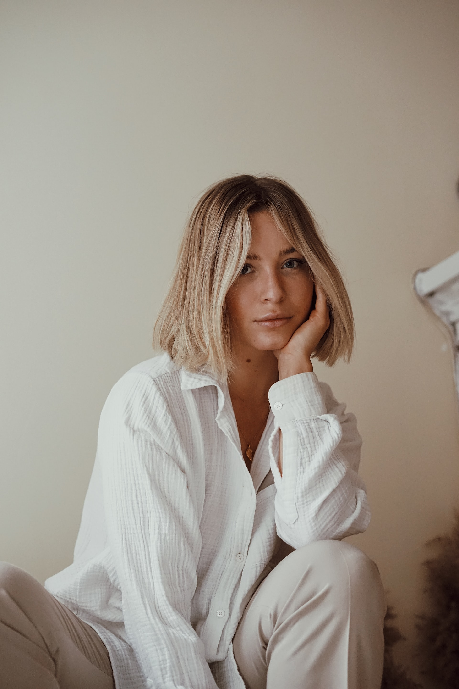
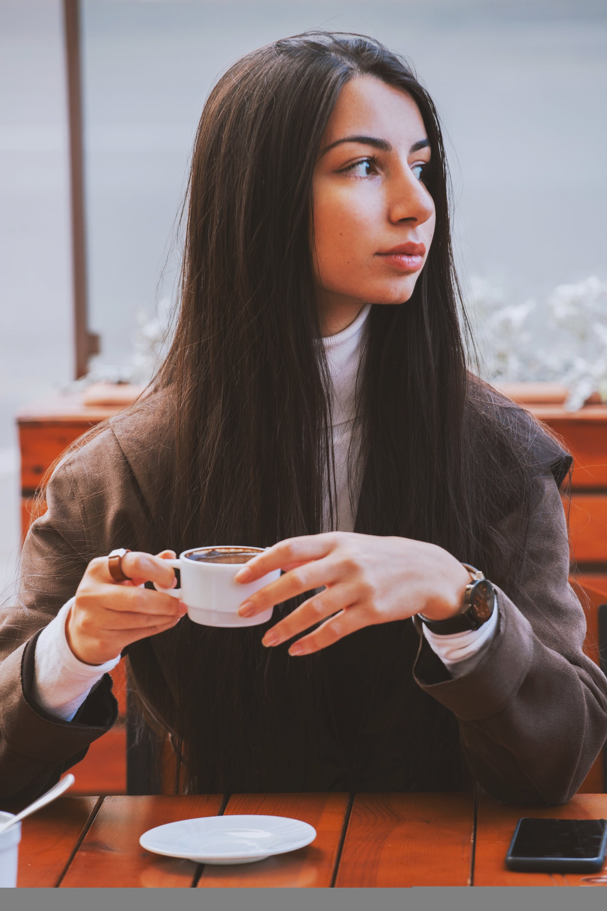

About Us
Where It All Started
Mirrorball Espresso Bar started as a dream while working as a barista to pay my way through college. While learning the ins and outs of all things espresso, I was enamored by the beautiful intersection of chemistry, artistry, and deliciousness that was involved in the entire process. I quickly learned everything I could, and my job became both my hobby and my favorite place. After graduating college, I spent a few obligatory years actually using my degree before realizing that my dream was to open up my very oen coffee shop and share the art of espresso with so many more people. We officially opened our doors in March of 2022.
Meet the Owners
Sadie
Sadie is the one who dreamt up this little shop! She is our visionary, our creative eye, our curator, and our encourager. She is also super knowledgable on the science behind crafting the perfect cup of coffee. Before opening Mirrorball, she worked as a barista for 4 years and as a barista trainer for an additional 2 years.
Maribel
Maribel is the driver of all things business for us. She is our organizer, our number cruncher, and the one keeping us on track. She is is also our resident latte art master, and can pour the perfect rosetta every single time. Before opening Mirrorball, she worked as a barista for 3 years, and then was a manager for a coffee shop for an additional 2 years.